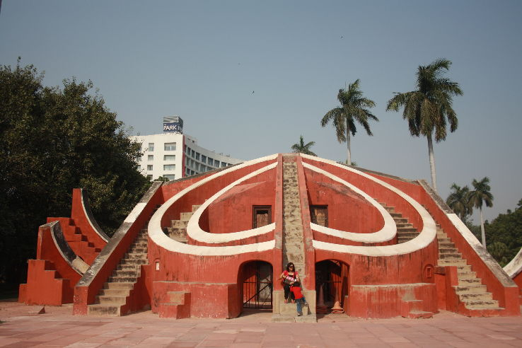

Brooklyn Bridge
The Brooklyn Bridge is a hybrid cable-stayed/suspension bridge in New York City. It connects the boroughs of Manhattan and Brooklyn and is a popular tourist attraction.


The Brooklyn Bridge is a hybrid cable-stayed/suspension bridge in New York City. It connects the boroughs of Manhattan and Brooklyn and is a popular tourist attraction.